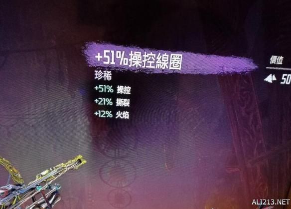
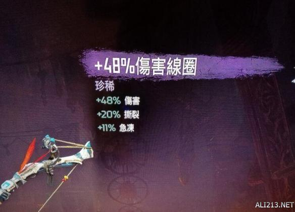
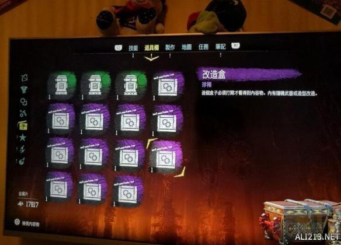

塞尔达传说荒野之息游戏中致富后怎么刷3属性线圈?有玩家发现了一个较为实用的方法，下面给大家带来了快速刷3属性线圈方法，感兴趣的玩家们一起来看下吧。
快速刷3属性线圈方法
1 如果火星了请见谅
2 首先你要足够的钱，中期我已经5万多碎片了，不知道怎么致富的，请找双雷霆。
3 找任意个商店，买1350紫色箱子，能买多少买多少。我反正买了20个，存档!
4 在道具里点开紫箱子，切记只点开莫取走。没满意的就读档。所有箱子内容又随机改变了。只要你不取走。
5 开完箱子后，有48属性以上的肯定是三属性的。取走就行。
6 我10分钟刷出了6个三属性，很好刷的。


